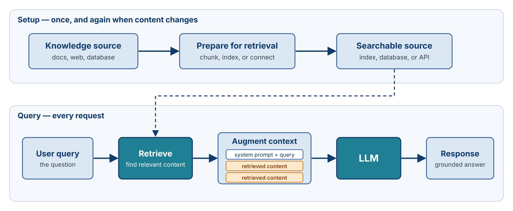
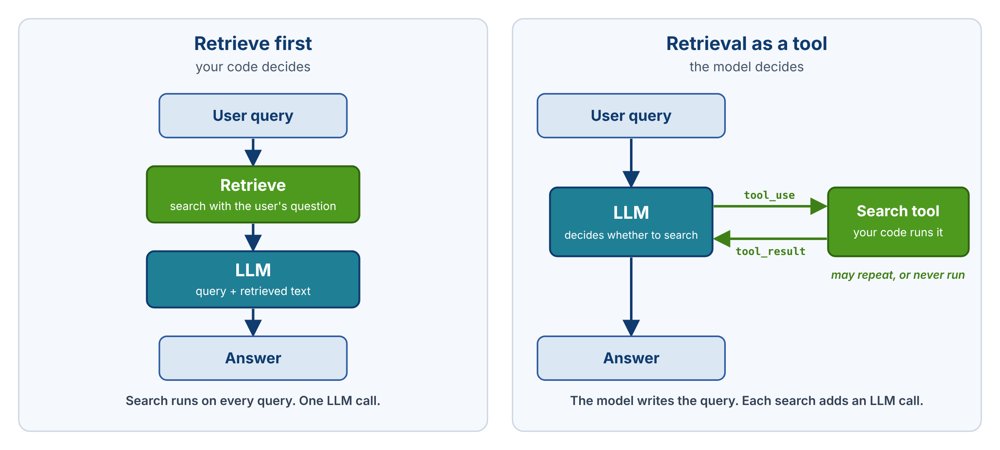

Modules 4 and 7 dealt with context after it accumulates: how the messages array grows, and how to trim, select, or summarize it when it grows too large. This module asks the opposite question. Where does useful information come from in the first place, and how does it get into the context?
Retrieval-augmented generation, or RAG, is the standard answer. The term has been prominent since the earliest LLM applications of 2022 and 2023, and it appears in almost any discussion of LLMs and agents. It comes late in this course on purpose. With context management and tool calling already in place, RAG reads as what it is: one form of context engineering, closely related to things the coding agent already does.
A model knows what it learned during training. Three categories of information fall outside that knowledge.
Recent information. Every model has a training cutoff. Anything that happened after it, from yesterday's weather to a major news event last month, is absent from the model's weights. The only way the model can use that information is if it appears in the context.
Private knowledge. A model knows nothing about information that was never public. For a coding agent, the most important private knowledge is the codebase itself: the agent cannot edit code it has never seen. Private knowledge also includes a company's internal documentation, its customer data, and its product manuals. An agent that helps a customer assemble furniture needs the assembly instructions for that company's products, and those instructions were not in any training set.
High-precision facts. Some facts may have appeared in training data but still cannot be reproduced reliably: exact API signatures, current prices, the schema of a particular database table. A model retains a compressed version of what it saw during training. Compression keeps general patterns well and exact details poorly, so even publicly available facts are often not recoverable with the precision an application needs.
When a question depends on any of these, asking the model directly produces one of two failures: a confident wrong answer, or a refusal. The information has to be supplied in the context.
The simplest way to supply information is to include all of it. A furniture company with 30 products could paste every instruction manual into the system prompt, and a model with a million-token window might hold them all. Some small applications work this way. As a general strategy, it fails for three reasons.
Prompt caching reduces the cost of resending the same prefix, but it does not address the other two problems. A five-million-token knowledge base does not fit in a 200K window, cached or not. And a large window does not need to be filled. The design principle is selectivity: put in the context only what is relevant to the current request.
RAG is a three-step pattern for supplying relevant information:
The middle word in the name is precise. The model is not modified in any way. Its context is augmented. The same model, given a different context, produces a different answer. That is the whole mechanism.
From the model's point of view, retrieved content is text in the prompt like any other text. The model knows the content came from retrieval only if the prompt says so. Production systems usually frame retrieved content explicitly, for example with a heading such as "Retrieved documents" or with XML tags around each source. This lets the model tell retrieved material apart from the user's words, cite where an answer came from, and say when the retrieved material does not answer the question. The retrieved content lives in the messages array for that call. The original source, such as a document store or a search engine, keeps the full content; the context holds only what was retrieved this time.
This definition sounds much like tool calling, and the two overlap heavily. When the coding agent from Module 6 calls read_file and the file's contents come back as a tool result, the agent has retrieved information and augmented its context with it. That is retrieval-augmented generation, though the course did not call it that at the time.
RAG is the broader of the two ideas, because it does not require the model to drive retrieval. RAG predates reliable tool calling. In its original form, the developer's code performs retrieval before the model is ever called: it takes the user's question, searches some knowledge source, adds the results to the prompt, and makes one model call. The model never asks for anything. Tool calling, by contrast, is the specific workflow in which the model responds with a request to run a tool.
A RAG system has two phases.

The setup phase runs once, and again whenever the source content changes. It takes the knowledge source (documents, web pages, a database) and prepares it so that relevant pieces can be found quickly. What "prepare" means depends on the implementation: splitting documents into chunks and indexing them, building a database, or simply configuring a connection to a search API.
The query phase runs on every request: retrieve content relevant to the query, add it to the context, and generate.
Students often picture RAG as a single action at query time. Most of the engineering effort, however, sits in the setup phase. Retrieval can only be as good as the preparation behind it. When the preparation is good, retrieving before the model call is efficient: one search and one model call produce a grounded answer. Building a knowledge base that reliably returns the right content for an arbitrary question is the hard part, and it is the subject of the next two lectures.
The pipeline above runs retrieval before the model is called. That is one of two places to put the retrieval step.

In the retrieve-first design, the developer's code decides. It searches on every query, uses the user's question as the search query, adds the results to the context, and calls the model once. This is the classic RAG design.
In the retrieval-as-a-tool design, the model decides. It receives a search tool, the same kind of tool as read_file from Module 6. The model chooses whether to search, writes its own search query, and can search again if the first results are weak. Each search adds a model call.
| Retrieve first | Retrieval as a tool | |
|---|---|---|
| Who decides | Your code, on every query | The model, when it needs information |
| Search query | The user's question as written | Written by the model; can retry |
| LLM calls | One | One more per search |
| Behavior | Same steps every time | Varies by question |
| Fits | Q&A over a fixed set of documents | Agents, where many turns need no lookup |
Retrieve-first has three weaknesses. It searches even when the question needs no lookup. It searches only once, so a poor first result cannot be corrected. And it searches with the user's wording, which is often a poor search query. The tool design fixes all three. The cost is extra model calls and behavior that varies from one question to the next. The developer also gives up control over how much the model searches, and an agent that searches freely can fill its context with results.
The retrieve-first design keeps that control, at the price of more up-front work: the developer must build retrieval good enough to run blind on every query.
The right choice depends on the application. A support bot over a fixed help center suits retrieve-first: nearly every question needs a lookup, and the documents change rarely. A coding agent suits retrieval as a tool: many turns need no lookup at all, and the model must choose between reading files, searching, and running commands. The team that built Claude Code reports exactly this path. Early versions used indexed RAG over the codebase; the team moved to agentic search, in which the model explores the code with glob and grep tools. They accepted more latency and more tokens in exchange, and no longer had to maintain an index that could fall out of sync with the code. Many production systems blend the two designs: Claude Code loads its CLAUDE.md project file into the context up front, and searches for everything else at runtime. Lecture 8.2 shows vector search wired as a tool in the agent loop.
RAG applies the principle of Modules 4 and 7 to external knowledge: do not carry context you do not need.
Each query is a separate retrieval problem. This also makes retrieved content a candidate for ephemeral context. An application may include retrieved material for the turn that needs it, then leave it out of the history it sends on later turns. Whether to keep retrieved content in the conversation is a design decision, and it interacts directly with the context management strategies of Module 7.
RAG is often discussed alongside fine-tuning, sometimes as if they were alternatives for the same job. They change different things.
Fine-tuning continues training a pre-trained model on additional data, which changes the model's weights. In principle, the furniture company could fine-tune a model on all of its instruction manuals, so that the model itself carries that knowledge into every conversation. In practice, this approach has serious limits. The model was trained on an enormous amount of data, so a small additional dataset has a limited effect; fine-tuning needs a substantial amount of data to make a difference. It requires a training run, which costs time and money, and it must be repeated when the content changes. Model licenses and provider terms also restrict which models can be fine-tuned and how.
RAG leaves the weights alone and puts the information in the context instead.
| Fine-tuning | RAG | |
|---|---|---|
| What changes | Model weights | Context (per query) |
| Persistence | Permanent | Per-call |
| Cost | Training run + inference | Retrieval call + larger prompt |
| Update cycle | Re-train when content changes | Re-index when content changes |
| Source attribution | None — knowledge fused into weights | Yes — show which document supplied the answer |
| Best for | Style, format, domain language | Facts, current info, source-attributable answers |
The two tools suit different problems:
For most application work, RAG is the default and fine-tuning is a specialty tool. Whether retrieval runs before the model call or as a tool, it is the more effective way to give a model hard facts to reason about.
Most introductions to RAG present it together with vector embeddings and vector databases, often as if the three were one thing. Vector search is important, and it is the most common implementation, but it is only one way to find relevant information.
Many other mechanisms retrieve information:
Each of these brings external information into the model's context, and each is a valid RAG implementation for the right problem. Calling a search API and adding the results to the prompt is RAG, with no special technology involved. In agents, these mechanisms usually run as tools that the model calls. In the classic design, the developer's code runs them before the model call.
Lecture 8.2 covers the vector approach in depth, because it is the most common and the one most often meant by "RAG." Lecture 8.3 covers the other mechanisms and how to choose among them.
RAG solves the knowledge gap: recent, private, and high-precision information that the model does not have. It augments the context and leaves the model unchanged: the same model, given different context, gives a different answer. It is just-in-time knowledge: pull in what the current query needs rather than preloading everything, because context is finite, costs money on every call, and degrades with length. Retrieval can be wired two ways: the developer's code retrieves before the model call, or the model calls a retrieval tool; agents usually do the second, and many systems blend both. RAG differs from fine-tuning, which changes weights and suits style and format, while RAG changes context and suits facts. And RAG is a category, not a technology: vector search is one implementation, and web search, database queries, file reads, and API calls are others.